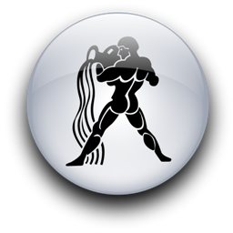
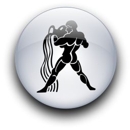

Женщина Водолей и Мужчина Дева
-

 

Об этой паре одно можно сказать определенно: пожизненный контракт не будет заключен, пока между ними нет настоящей любви.
Другие пары могут довольствоваться уважением и сочувствием, мечтая втайне о "великой любви". Но только не Дева и Водолей.
Лишь особенное, глубокое чувство может заставить Деву разделить с кем-то свою жизнь, отказаться от спасительного одиночества.
Что до Водолеев, они не прекращают любовных поисков, легко разрывая старые отношения ради новых, до тех пор, пока не найдут свой идеал. Довольно часто они ищут повторения юношеской любви и так упрямо цепляются за прошлое, что оно мешает настоящему.
Некоторые женщины-Водолеи ведут себя вызывающе, отпускают неприятные шуточки. Это попытка шокировать мужчину, вывести его из эмоционального равновесия, обратить на себя внимание неожиданным и странным поведением. Скорее всего, мужчину-Деву покоробит вульгарный язык, слишком свободное поведение женщины. Не забывайте, что Девы целомудренны от рождения.
Не торопитесь делать вывод, что женщины-Водолеи вульгарны. Нет. Просто они обычно откровеннее и искреннее своих сестер (кроме Стрельца). Они независимы, непредсказуемы и сумасбродны.
Женщины-Водолеи презирают общественное мнение и сплетни, подчиняясь только собственным представлениям о чести и приличиях. Даже самые тихие и послушные из них нередко огорошивают окружающих. Смиренница и домоседка вдруг бросает мужа, чтобы стать танцовщицей, художницей или актрисой.
Ни Дева, ни Водолей не подчиняются слепо телесному влечению. Влюбившись, они не торопятся сблизиться с предметом своих желаний. Они отступают на время, укрываются в глубинах своего "я". Потому оба они боятся того, чего так сильно желают.
Оба по возможности уклоняются от брака. Однако Водолей, если уж выбор сделан, бросается в супружество очертя голову, а Дева тянет до последнего. Это может породить ссоры.
Говорят, что нежность - женское качество, но если уж мужчина нежен, в этом он превосходит женщину. Это совершенно справедливо для Девы. Нежность этого мужчины почти вещественно осязаема, пронизывает все его отношение к, женщине. Многие дочери Евы находят это качество драгоценным в любовнике и муже. Но женщина-Водолей предпочитает, чтобы всякий опыт был быстротечным, чтобы нежность чередовалась с грубой страстью, а неистовое обладание сменялось мучительно-медленно и томно. Эту одержимость новизной должен иметь в виду ее любовник.
Мужчине-Деве претит грубость и невоздержанность пещерного человека. Ему трудно переступить через себя. Его возлюбленной не следует рассчитывать, что он будет менять технику любви каждую ночь. Ей также полезно помнить, что стыдливость, чистота и умеренность разжигают в нем страсть куда вернее, чем грубая фамильярность.
Мысль Водолея совершает непостижимые кувырки и кульбиты. Это частенько раздражает Деву. Вы говорите, что тарелка плохо вымыта, а она несет какую-то чушь о пришельцах. Слово "тарелка" дало необычный толчок ее мыслям. А эти вопросы Водолеев... Они спрашивают одно, а хотят узнать совсем другое. Например, они разошлись на время, чтобы все спокойно обдумать и выбрать между окончательным разрывом и примирением. Она пишет ему: "Я надеюсь, что бы ни случилось, мы останемся друзьями, не так ли, дорогой?" Конечно, мужчина-Дева слишком хорошо ее изучил, чтобы понять буквально. И если он хочет ее возвращения, то ответит твердо и недвусмысленно: "Нет, мы не можем оставаться друзьями. Между нами должна быть любовь, или ничего. Ты знаешь это и просто пыталась выяснить, знаю ли это я, не так ли, дорогая?"